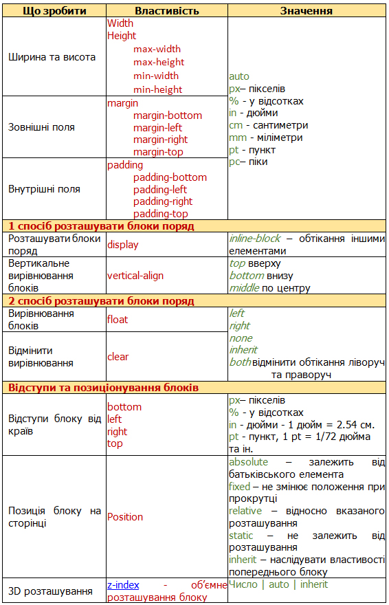
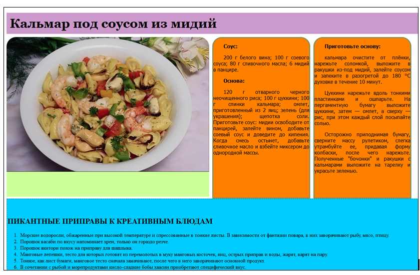

6 Блоки
Таблиця 6.1 – Властивості та значення блоків

 Приклад 6.1. За зразком виконати форматування сторінки з використанням блоків (рис.6.1).
Приклад 6.1. За зразком виконати форматування сторінки з використанням блоків (рис.6.1).

Рис. 6.1 – Зразок сайту
Запис тегами та стилями:
6.1 Градієнти
Таблиця 6.2 – Типи лінійних градієнтів
Приклад 6.2. Лінійний градієнт для фону блоку:
Приклад 6.3. Радіальний градієнт для заливки рядка таблиці: